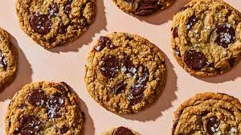

Chocolate Chip Cookie

Made this for a special person.
Ingredients
- 150g (2/3 cup) unsalted butter
- 30g (2 tbsp) cold water
- 100g (1/2 cup) sugar
- 100g (1/2 cup packed) dark brown sugar (light will also work)
- 1 large egg, fridge cold
- 1 tbsp vanilla extract
- 1 tsp baking soda
- 1 tsp kosher salt (use 1/2 tsp for table salt)
- 175g (1 1/4 cup) all-purpose flour
- 150g (3/4 cup) semi-sweet chocolate chips (sub any chocolate: bitter-sweet or dark chips, chunks, chopped bars, etc)
- Flaky sea salt, for finishing (sub kosher salt, coarse sea salt)
Steps
Brown Butter
- In a medium bowl, thoroughly blend the flour, active dry yeast, and salt. Add the water and, with a wooden spoon or your hands, mix thoroughly.
- Cover the bowl with plastic wrap or a kitchen towel and allow it to rise at room temperature for 18 hours or until it has more than doubled. It will take longer in a chilly room and less time in a very warm one.
- Flour a work surface and scrape out the dough. Divide it into 4 equal parts and shape them. For each portion, start with the right side of the dough and pull it towards the center; then do the same with the left, then the top, then the bottom (the order doesn't actually matter; what you want is four folds). Shape each portion into a round and turn seam side down. Mold the dough into a neat circular mound. The mounds should not be sticky; if they are, dust with more flour.
- If you don't intend to use the dough right away, wrap the balls individually in plastic and refrigerate for up to 3 days. Return to room temperature by leaving them out on the counter, covered in a damp cloth, for 2 to 3 hours before needed.
Make Dough
- After the butter has cooled slightly but the bowl is still warm to the touch, add in brown and regular sugar. Whisk to fully combine.
- Add in egg and vanilla extract. Whisk vigorously for 1 minute until the mixture lightens in colour and thickens slightly.
- Add baking soda and salt. Whisk for 15 seconds to distribute evenly.
- Add flour to bowl and use spatula to stir and fold until the batter is even and there are no dry patches of flour.
- Add chocolate chips and fold to distribute evenly.
Shape & Chill
- Use large #20 cookie scoop to portion into dough balls. If rolling by hand, aim for around golf ball size or 3 tbsp (just under 1/4 cup). The dough will be slightly soft and sticky but still shapeable into rough balls. Use slightly wet hands to help with sticking (but honestly just embrace the stickiness and power through haha). If the dough is too soft to work with, chill for 30 minutes and try again. The recipe makes roughly 12 golf ball sized dough balls (but sometimes I get 11, depending on how much of the cookie dough I snack on).
- Place all the dough balls close together on a lined cookie sheet. Cover and chill in fridge for 30 minutes minimum, up to 48 hours. The dough can also be frozen. After the balls harden in the fridge, transfer to a freezer bag and keep up to 3 months. Bake straight from frozen but add 2-3 minutes to the baking time.
Bake
- Pre-heat oven to 350F (175C) with rack in the centre.
- Place max 6 frozen dough balls on one lined cookie sheet. Sprinkle lightly with flaky salt.
- Bake one tray at a time for 10-12 minutes at 350F. When ready, the outside of the cookies will be lightly browned and crinkly. The centre will be blonde and puffed up.
- Cool on tray for 5-10 minutes then transfer to wire rack to cool completely before serving.